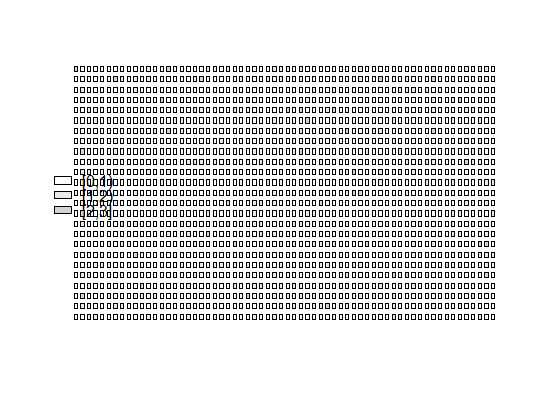

"adpcr" - end-point array digital PCR experimentsA class specifically designed to contain results from end-point array
digital PCR experiments. Data is represented as matrix, where each column
describes different experiment. Type of data in all columns is specified in
slot "type". Inherits from dpcr.
For more in-depth explanation of digital PCR data structure, see
dpcr.
breaks"numeric" vector giving the number of intervals into which
.Data should be cut. The second element in breaks vector is considered
a threshold. Partition above or equal to threshold is counted as
positive.col_names"character" vector naming the columns in the array.row_names"character" vector naming the rows in the array.panel_id"factor" naming the panel to which experiment belong.rand_array <- sim_adpcr(400, 1600, 100, pos_sums = FALSE, n_panels = 5) one_rand_array <- extract_dpcr(rand_array, 1) plot_panel(one_rand_array, 40, 40)
adpcr2panel, bind_dpcr,
extract_dpcr.
Plotting: plot_panel.
Tests: test_panel.
Simulation: sim_adpcr.
Real-time array digital PCR: rtadpcr.
Droplet digital PCR: ddpcr.